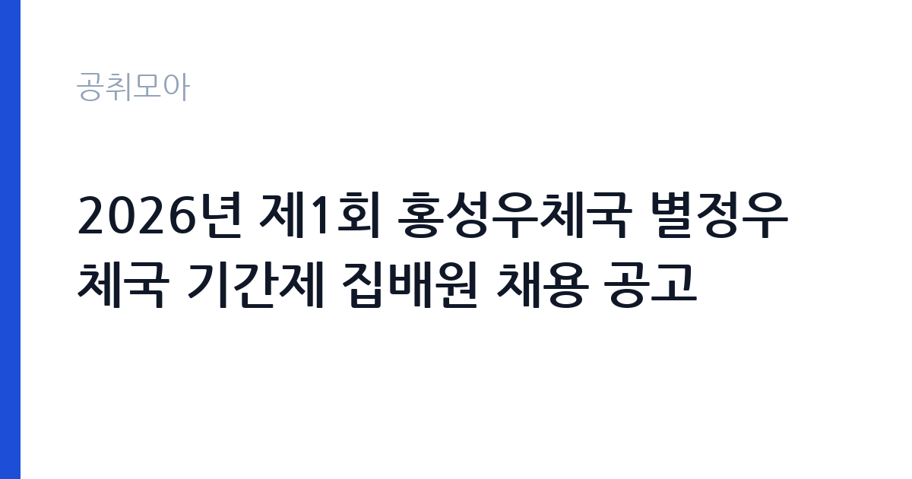

[국가기관] 2026년 제1회 홍성우체국 별정우체국 기간제 집배원 채용 공고
과학기술정보통신부 우정사업본부 충청지방우정청 홍성우체국 · 충남 · 마감 2026-11-02 (D-11) · 출처 나라일터

한눈에 보는 모집 조건
| 기관 | 과학기술정보통신부 우정사업본부 충청지방우정청 홍성우체국 |
|---|---|
| 공고명 | 2026년 제1회 홍성우체국 별정우체국 기간제 집배원 채용 공고 |
| 고용형태 | 공무직 |
| 근무지 | 충남 |
| 게시일 | 2026-10-22 |
| 마감일 | 2026-11-02 (D-11) |
지원자격, 이렇게 읽으세요
- 기간제 집배원 1명
- 접수 ~2026-11-02 마감
- 세부 조건은 원문 공고문 확인
공무직 근로자는 공무원이 아니라 근로기준법이 적용되는 근로자이지만 기간의 정함이 없는 무기계약으로 채용되는 경우가 많아 정년까지 근무가 가능합니다. 채용은 공무원 시험과 달리 기관의 자체 전형으로 진행되고 인사 규정과 임금표를 적용받습니다. 이번 공고는 과학기술정보통신부 우정사업본부 충청지방우정청 홍성우체국에서 직접 진행하는 자체 전형으로, 응시자격과 제출서류는 공고문에 항목별로 제시됩니다. 집배 업무는 학력과 전공을 크게 보지 않는 대신, 운전면허와 실제 운행 가능 여부를 확인합니다. 대부분 1종 보통 이상 운전면허를 요구하며, 이륜차나 소형 화물차를 직접 운행해야 합니다. 주민등록상 거주지와 근무 지역이 가까워야 지원 가능한 경우가 많으므로, 공고문의 지역 제한 조항을 먼저 확인하십시오. 결격사유 조회와 신체검사, 음주운전 이력 조회가 포함되는 경우가 있습니다. 서류는 접수 마감 이후 보완이 되지 않으므로 자격 요건과 증빙 서류를 마감 전에 모두 갖춰야 합니다. 공고문에 명시된 우대 사항은 해당 여부를 확인해 증빙을 첨부해야 가점이 반영됩니다. 자격증은 유효 기간과 등록 상태를 확인해야 합니다. 갱신이 필요한 자격이라면 갱신 여부를 먼저 점검하십시오.
이 공고의 포인트
이 공고의 첫 번째 포인트는 고용 형태입니다. 무기계약으로 채용되면 정년까지 근무가 가능해 재계약 부담이 없습니다. 반대로 기간제로 채용되는 공고라면 계약 기간을 먼저 확인해야 합니다. 두 번째는 업무 범위가 명확하다는 점입니다. 우편 집배 직무로 채용되므로 배치 이후 담당 업무가 크게 흔들리지 않습니다. 세 번째는 근무지입니다. 충남 지역 근무로 수도권 공고에 비해 지원자 분포가 넓지 않아 상대적으로 경쟁이 분산되는 경우가 있습니다. 접수 기간이 길지 않아 서류 준비와 자격 확인을 동시에 진행해야 합니다. 같은 직무로 함께 올라온 공고 가운데 접수 마감이 가장 늦은 편이라 준비 시간을 상대적으로 확보할 수 있습니다. 다만 선발 인원이 1명으로 많지 않아 자격을 갖춘 지원자가 몰리면 경쟁률이 높아질 수 있습니다.
전형은 어떻게 진행되나
서류전형과 면접전형 외에 직무수행능력 평가가 붙는 경우가 있습니다. 평가 방식은 공고문에 구체적으로 적혀 있으므로 어떤 항목에 배점이 높은지 먼저 파악하십시오. 면접에서는 지원 동기보다 실제 업무 경험에 대한 질문이 많고, 답변의 구체성이 평가를 가릅니다. 전형 일정은 서류 마감 이후 빠르게 진행되므로 연락 가능한 번호를 정확히 기재하고 문자와 메일을 수시로 확인해야 합니다. 최종 단계에서는 결격사유 조회와 신체검사가 진행됩니다. 서류 단계에서 요건을 충족하지 못하면 이후 전형을 준비할 기회가 없으므로, 제출 전 요건 대조를 한 번 더 하는 것이 좋습니다.
원문에서 확인한 전형 방식
[홍성우체국 공고 제2026-18호] 《 2026년 제1회 홍성우체국 별정우체국 기간제 집배원 채용시험 공고 》 2026년도 제1회 홍성우체국 별정우체국 기간제 집배원 채용시험 계획을 다음과 같이 공고합니다. 1. 채용 예정직종 : 기간제 집배원 2. 채용 예정인원 : 1명 3. 시험방법 : 1차 서류전형, 2차 실기시험, 3차 면접시험 4. 서류접수 : 2026. 10. 29.(목) ~ 2026. 11. 2.(월) 18시까지 (방문, 등기우편, 전자우편 접수) -접수장소: 홍성우체국 3층 우편물류과(충남 홍성군 홍성읍 내포로111, 우편물류과 채용담당) -마감일(2026. 11. 2.)소인 등기우편물의 경우 11. 3.도착한 익일특급 등기우편에 한하여 유효 5. 서류전형 합격자 발표 : 2026. 11. 5.(목) 6. 실기 및 면접시험 : 2026. 11. 9.(월) 7. 최종합격자 발표 : 2026. 11. 11.(수) 8. 응시자격 - 제1종 또는 제2종 보통운전면허 와 제2종 소형먼허 또는 제2종 원종기장치자전거면허 를 동시에 소지하고 자동이륜차 운전이 가능한자 ※ 자세한 사항은 반드시 공고문을 확인하시기 바랍니다.
이런 분께 추천해요
- 관할 구역 지리를 잘 아는 분
- 1종 운전면허를 보유하고 실제 운행이 가능한 분
- 궂은 날씨에도 배달 일정을 지킬 수 있는 체력을 가진 분
지원 전 체크리스트
- 응시자격 요건과 경력 기준을 충족하는가 — 경력은 증명서로 입증해야 합니다
- 무기계약 여부와 정년 기준을 공고문에서 확인했는가
- 제출서류 목록을 모두 준비했는가 — 누락 시 서류 단계에서 탈락합니다
- 접수 마감 2026-11-02 이전에 접수 방식을 확인해 제출했는가
모집 일정과 제출 타이밍
공고 게시일은 2026-10-22, 접수 마감은 2026-11-02입니다. 준비 기간은 약 11일로 서류 준비와 자격 증빙을 함께 처리하기에는 넉넉하지 않은 편입니다. 첫 이틀 안에 공고문과 첨부 서식을 내려받아 요건을 확인하고 남은 기간에 증빙 서류를 발급받는 일정이 현실적입니다. 면접은 서류 합격자 발표 후 짧은 간격으로 진행되는 경우가 많으므로 서류 제출과 동시에 면접 준비를 시작하는 편이 안전합니다. 마감일에는 접수 시스템이 몰리므로 하루 전까지 제출을 마치는 것이 좋습니다. 제출 서류는 공고문에 적힌 순서대로 정리하면 담당자가 확인하기 쉬워 누락이 줄어듭니다. 충남 근무지는 산업단지와 농촌 지역이 섞여 있어 통근 조건이 공고마다 다릅니다. 마감까지 2주 안팎이 있어 준비할 시간은 있지만 미루면 촉박해집니다. 선발 인원이 한두 명 수준이라 지원자 개개인의 서류 완성도가 그대로 평가에 반영됩니다.
직무 이해하기: 국가기관
우체국은 우정사업본부 산하에서 우편물 접수와 배달, 금융 서비스를 함께 운영하는 국가기관입니다. 지방우체국은 지역 단위로 집배 구역을 나눠 운영하며, 인력이 부족한 구역은 상시계약이나 기간제로 보충합니다. 우편물 물량은 명절과 연말에 몰리고, 폭설이나 집중호우 때는 배달 일정 조정이 필요합니다. 집배 업무는 관할 구역의 우편물을 구분하고 배달 경로를 따라 순회하며 수취인에게 전달하는 일입니다. 오전에는 구역별로 배달할 우편물을 순서대로 정리하고, 오후에는 등기·소포 같은 특수 우편물을 별도로 처리합니다. 배달 결과를 단말기에 입력하고, 부재중 우편물은 통지서를 남기거나 우체국으로 회수합니다. 우천·폭설에도 배달 일정이 유지되므로 체력과 날씨 대응이 업무의 일부입니다. 무거운 소포를 다루기 때문에 허리와 어깨 부담이 있고, 교통 법규 준수와 안전 운전이 평가에 포함됩니다. 업무는 혼자 처리하기보다 부서 단위로 나눠 진행되므로 담당 구역과 협업 범위를 입사 초에 확인하는 것이 중요합니다. 직무 교육은 입사 후 기관 자체 계획에 따라 진행되므로 사전 경험이 없어도 시작할 수 있습니다.
자기소개서 작성 팁
집배 지원서는 성실성과 지역 이해도를 보여주는 것이 핵심입니다. 본인이 사는 동네의 지리와 주요 시설을 얼마나 잘 아는지 구체적으로 쓰고, 비 오는 날이나 눈 오는 날에도 일정을 지킨 경험을 연결하십시오. 운전 경력과 무사고 기록, 고객 응대 경험은 강한 소재입니다. 막연한 안정성 추구보다 매일 같은 구역을 책임지는 일에 대한 태도를 드러내십시오. 문항별 글자 수 제한을 먼저 확인하고, 각 문항의 첫 문장에 결론을 배치하는 방식이 읽기 쉽습니다. 지원 동기는 기관의 어떤 사업에 기여하겠다는 한 문장으로 시작하고, 이어서 본인의 경험을 근거로 붙이십시오. 감점을 피하려면 다른 기관에 보낼 수 있는 범용 문장을 그대로 쓰지 않는 것이 중요합니다. 기관 이름과 사업명이 문장 안에 자연스럽게 들어가야 준비도가 드러납니다.
면접 준비 포인트
면접에서는 배달 구역 숙지 능력과 민원 응대 태도를 확인합니다. 길을 어떻게 외우는지, 부재중 우편물을 어떻게 처리할지, 수취인이 부재중이라고 화를 낼 때 어떻게 응대할지 묻는 질문이 나옵니다. 우편물은 개인의 사생활이 담긴 물건이므로 비밀 유지 의식을 반드시 언급하십시오. 체력과 건강 상태, 장기 근무 의사도 함께 봅니다. 답변은 상황, 판단, 조치의 순서로 정리하면 전달이 분명해집니다. 모르는 질문에는 모른다고 밝히고 확인 방법을 제시하는 편이 억지 답변보다 낫습니다. 마지막에는 근무 의사와 함께 2026-11-02 이후 일정에 언제든 응할 수 있다는 점을 전달하십시오. 면접 당일 신분증과 제출서류 원본을 요구하는 경우가 있으니 공고문의 준비물 목록을 확인하십시오.
급여·근무조건 읽는 법
우체국 집배원의 보수는 우정사업본부와 해당 우체국의 직종별 보수 기준을 따르며, 기본급에 정액급식비·명절휴가비·초과근무수당이 붙는 구조입니다. 공무직 상시계약집배원은 기간의 정함이 없는 신분으로 채용되는 경우가 많고, 기간제 집배원은 계약 기간이 정해집니다. 공고문에는 직종과 근무 형태에 따른 보수 항목이 표로 제시되므로, 월 급여와 수당을 나눠서 확인하십시오. 실제 수령액은 초과근무와 토요일 격주 근무 여부에 따라 달라집니다. 2026년 적용 최저임금은 시급 10,320원, 월 환산 2,156,880원(주 40시간·209시간 기준)입니다. 고용노동부 고시 제2025-47호로 확정된 금액입니다. 보수는 보통 기본급, 각종 수당, 상여로 나뉘어 지급됩니다. 기본급만 보면 적어 보여도 정액급식비와 명절휴가비, 복지포인트가 붙으면 실제 총액이 달라지므로 항목별로 확인해야 합니다. 4대 보험과 퇴직급여 적용 여부도 함께 보십시오. 기간제는 계약 기간이 짧아 월 급여가 높아도 연간 총액은 적을 수 있습니다.
자주 묻는 질문
- 선발 인원은 몇 명인가요?
공고문 기준 1명입니다. 직종별로 인원이 나뉘는 경우가 있으니 모집분야 항목을 함께 확인하십시오. - 근무지는 어디인가요?
충남 지역의 과학기술정보통신부 우정사업본부 충청지방우정청 홍성우체국 소속 근무지입니다. 세부 주소와 출퇴근 조건은 원문 공고문에서 확인할 수 있습니다. - 보수는 얼마인가요?
채용 신분(공무직)과 기관 임금 규정에 따라 정해지며 구체적인 금액은 공고문 처우 항목에 제시됩니다. 금액이 공개되지 않은 경우에는 원문의 보수표를 확인하십시오.
함께 보면 좋은 공고
[국가기관] 서울경찰청 3기동단 공무직 무기직(시설관리)근로자 채용 공고 — 마감 2026-11-02[국가기관] 2026년 통일부 전산주사보(일반임기제) 경력경쟁채용 공고 — 마감 2026-11-02[국가기관] 2026년 하반기 공무직 및 기간제 근로자 채용 공고문 — 마감 2026-11-03출처: 나라일터 공개정보를 바탕으로 공취모아가 정리한 안내글입니다. 모집 조건·일정은 변경될 수 있으니 지원 전 반드시 원문 공고문을 확인하세요. 본 글은 정보 제공용이며 합격을 보장하지 않습니다.